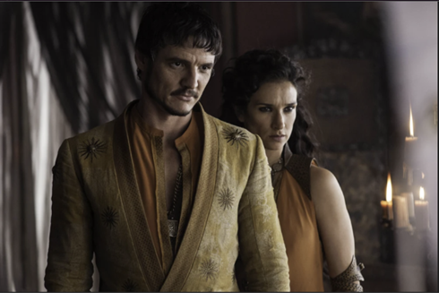

Дом Мартеллов является одним из великих домов Семи Королевств и управляет областью Дорн из замка Солнечное Копье. Представители дома традиционно называются принцами и принцессами. Название “Мартеллы” не является точным, и правильнее было бы называть их “Нимерос Мартелллы”, что означает “из рода Нимери”. Дом Мартеллов имеет андалусское происхождение и возвысился после ройнарских вторжений в Дорн в древние времена. Королева ройнаров Нимери взяла в мужья Лорда Морса Мартелла, и таким образом Мартеллы стали править Дорном после ройнар. Мартеллы были последним великим домом Вестероса, признавшим власть Железного Трона. Таргарианы, правившие Вестеросом на протяжении двух столетий, пытались завоевать Дорн, но так и не смогли. Тем не менее, между Таргарианами и Мартеллами заключались династические браки, и поэтому в жилах представителей этих домов течет кровь друг друга. Мартеллы известны своей осторожностью и предусмотрительностью. Благодаря этим качествам, они смогли сохранить независимость своего дома и области Дорн от посягательств других властителей Вестероса.
 Дана таблица people с атрибутами (столбцами): id, mother_id, father_id,
region_id, name, birth_date, death_date, is_alive, gender, biography.
Ниже приведены семьи и
идентификаторы персонажей, входящих в них. Выведите 2 колонки family, name,
отсортированные по фамилиям
Stark:
‘1’, ‘2’, ‘3’, ‘4’, ‘5’, ‘11’, ‘12’, ‘13’, ‘14’, ‘24’.
Lannister:
‘25’, ‘26’, ‘27’, 28’, ‘29’, ‘30’, ‘31’, ‘32’, ‘33’, ‘34’, ‘35’.
Targaryen:
‘15’, ‘16’, ‘17’, ‘18’, ‘19’, ‘20’, ‘21’, ‘22’, ‘23’, ‘92’, ‘93’.
Baratheon:
‘36’, ‘38’, ‘39’, ‘40’, ‘41’, ‘33’, ‘34’, ‘35’, ‘43’, ‘44’.
Tyrell:
‘45’, ‘47’, ‘49’, ‘50’.
Bolton:
‘56’, ‘57’.
Arryn:
‘62’, ‘63’, ‘64’, ‘65’, ‘66’.
Clegane:
‘67’, ‘68’.
Greyjoy:
‘69’, ‘70’, ‘71’, ‘72’, ‘73’, ‘74’, ‘75’, ‘76’.
Mormont:
’77’, ‘78’, ‘79’, ‘80’.
Tarly:
‘82’, ‘83’, ‘84’, ‘85’, ’86’.
Tully:
‘6’, ‘8’, ‘10’, ‘58’, ‘59’, ‘60’.
Martell:
‘87’, ‘88’, ‘90’, ‘91’.
Frey:
‘51’, ‘52’, ‘53’, ‘54’, ‘55’.
This site was created with the Nicepage